Hi, I’m
Zeyad
I’m a IT Technician
I’m a computer technician from Egypt, holding a diploma in Computer Science and currently a Business Information Systems student.
Versatile professional with experience across Sales, Telemarketing, IT, and Web Development, combining strong communication, problem-solving, technical, and digital skills.
Proven experience in outbound cold calling, lead qualification, CRM management, and appointment setting across the real estate and roofing industries.
Strong client communication and objection-handling skills, with the ability to build trust and maintain productive relationships with prospects.
Practical IT experience including Windows installation, driver configuration, OS troubleshooting, system diagnostics, and technical issue resolution.
Skilled in identifying system issues through error messages, Event Viewer logs, and crash diagnostics, with knowledge of basic networking and common troubleshooting commands.
Hands-on experience creating websites and online stores using HTML, CSS, JavaScript, and AI-assisted development / Vibe Coding.
Able to turn ideas and requirements into functional, responsive websites and e-commerce interfaces, using AI tools to accelerate development and experiment with different solutions.
Familiar with cybersecurity fundamentals and AI-driven workflow optimization.
Adaptable and quick to learn, with the ability to work effectively in fast-paced, target-driven environments while handling both technical and customer-facing tasks.
Skills
Technical
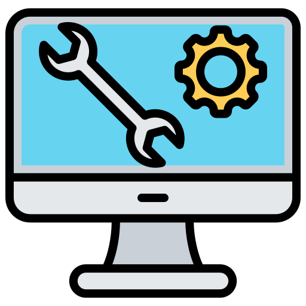
IT Technician HTML
HTML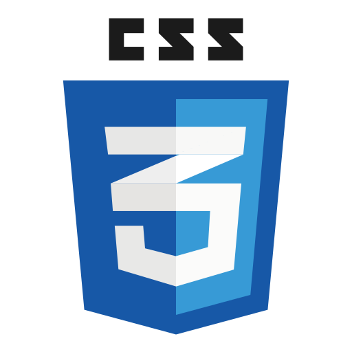
CSS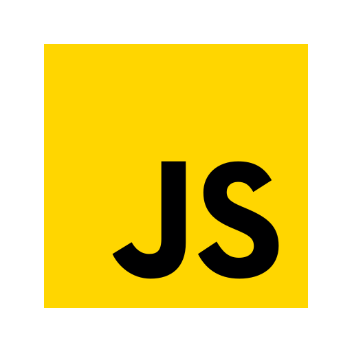
JavaScript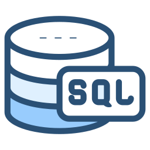
SQL (Basic) MS Office
MS Office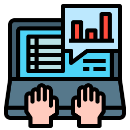
Data Entry- IT Support Fundamentals
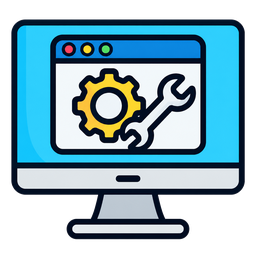
Windows Troubleshooting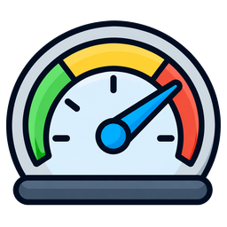
System Diagnostics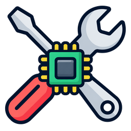
Hardware Maintenance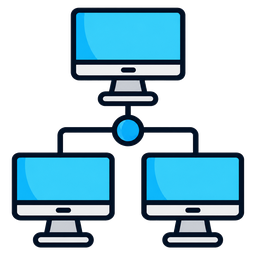
Basic Networking- Cybersecurity Fundamentals
- Responsive Web Design
- Java (Fundamentals)
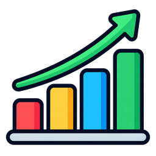
Google Analytics- AI Workflow Tools
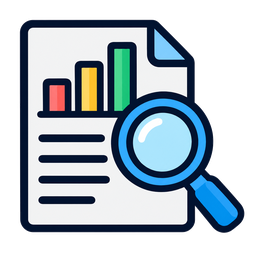
Research & Analysis- Documentation
- English–Arabic Translation
- Audio Transcription
- Fast & Accurate Typing
Sales and people
- Real Estate Agent
- Telemarketing Representative
- Cold Calling
- HR Recruiter
- Voice Acting
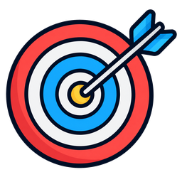
Lead Generation- Lead Qualification
- Objection Handling
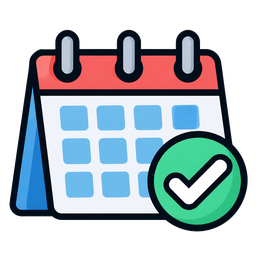
Appointment Setting- Negotiation
- CRM Systems
- Communication
- Active Listening
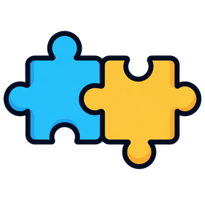
Problem Solving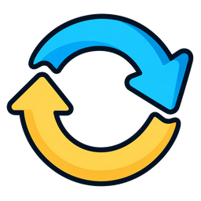
Adaptability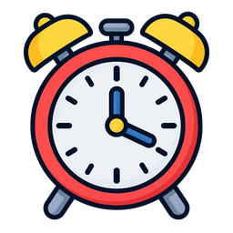
Time Management- Team Collaboration
- Remote Work
- Arabic: Native
- English: Upper Intermediate (B2-C1)
Professional Experience
Hands-on IT Experience
Personal & Peer Support
- Performed hands-on Windows installation, system configuration, driver installation, and basic system maintenance on personal computers.
- Diagnosed and resolved common Windows and software-related issues through systematic troubleshooting and error analysis.
- Used Windows Event Viewer, error messages, crash information, and system behavior to investigate and identify potential causes of technical issues.
- Assisted colleagues and peers with common computer, Windows, software, hardware, and connectivity-related issues.
- Performed basic network troubleshooting and investigated common connectivity, configuration, and system-related problems.
- Researched unfamiliar technical issues independently and applied documented solutions to resolve problems and improve system reliability.
- Used AI tools and technical documentation as research aids when troubleshooting unfamiliar issues, while validating solutions through practical testing.
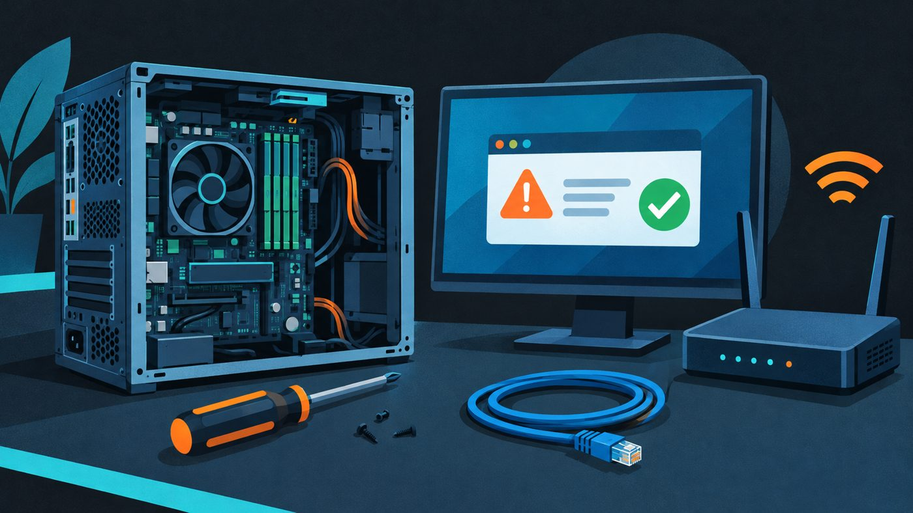
Real Estate Representative
Teleoceans & Coldio · Full time · November 2025 – October 2026
- Make 400–500 outbound cold calls per day to homeowners and potential sellers, generating 10–20 qualified real estate leads per week.
- Build rapport with prospects and handle objections professionally.
- Qualify leads based on motivation, property condition, asking price, and timeline to sell.
- Keep CRM records accurate, including call details, lead status, and client information.
- Use active listening to identify client needs and opportunities.
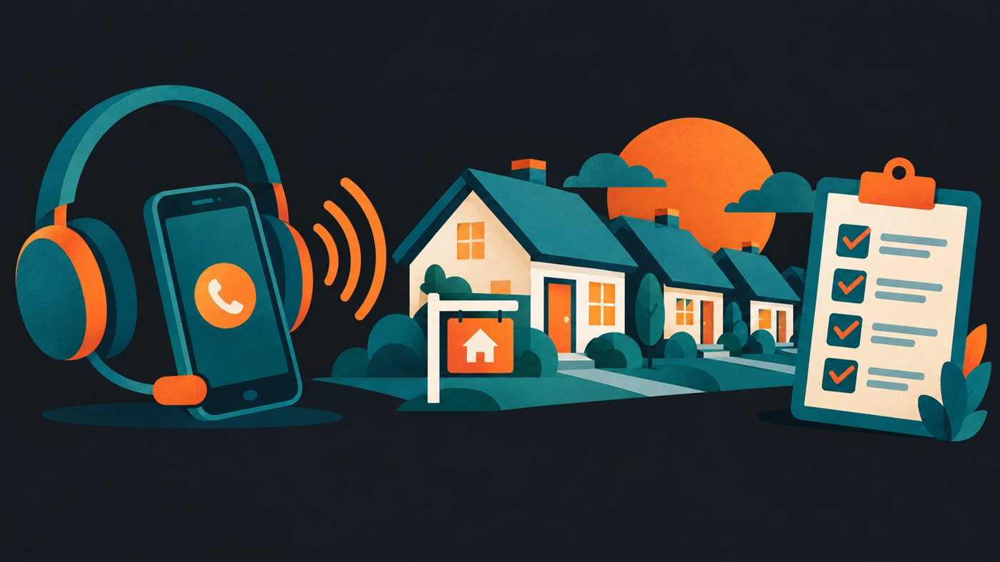
Telemarketing Representative (Roofing)
Mountains Solutions · Full time · June 2025 – November 2025
- Made 300–400 cold calls per day to homeowners and business owners, offering roof inspections and related services.
- Presented service features clearly and persuasively, tailored to each customer’s needs.
- Generated qualified leads and set 8–15 appointments per week, transferring warm prospects to the sales department for closing.
- Built trust with property owners through professional, persuasive communication.
- Kept up to date with service knowledge, company updates, and industry trends to keep messaging accurate.
HR Recruiter
Dragons Academe · Part time · November 2024 – February 2025
- Managed the recruitment process end to end: candidate sourcing, screening, and shortlisting.
- Conducted phone and video interviews to assess qualifications, soft skills, and cultural fit.
- Posted job ads across multiple platforms and managed applicant tracking systems (ATS).
- Worked with team leads and hiring managers to define job requirements and hiring strategies.
- Prepared and updated recruitment reports and performance metrics.
- Supported a better candidate experience and the company’s employer brand.
Frontend Development
Personal Projects · Self-directed · August 2023 – Now
- Built personal web projects, including responsive e-commerce / online store interfaces, using HTML, CSS, and JavaScript.
- Practiced turning ideas into functional pages with a focus on layout, usability, responsiveness, and basic interactivity.
- Tested responsive design and cross-browser compatibility through hands-on projects.
- Used AI-assisted development (Vibe Coding) to prototype ideas and speed up development.
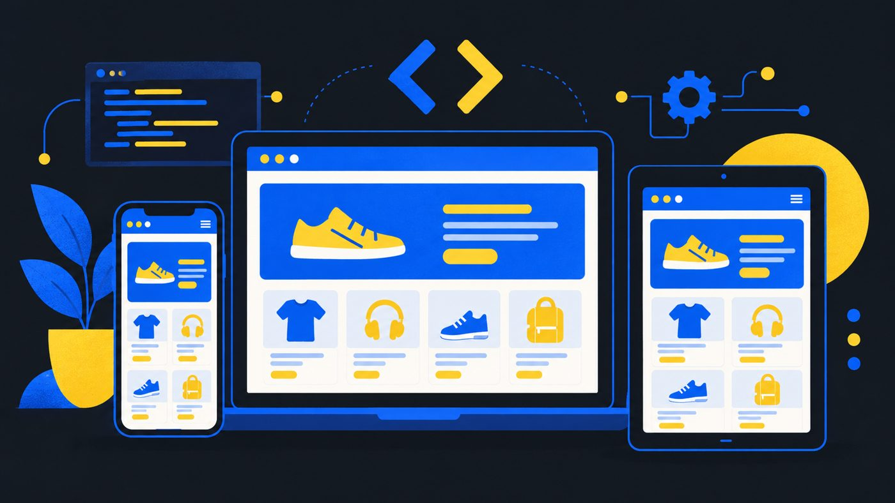
Research Study Assistant
Remote · Part time · April 2024 – October 2024
- Contributed to a doctoral research project on the role of Information Technology in transitioning conventional banking to Islamic banking in Saudi Arabia.
- Collected, organized, and analyzed qualitative and quantitative data.
- Took part in brainstorming sessions to refine research methodology and data collection strategies.
- Kept data entry, documentation, and reporting accurate and consistent.
- Used Microsoft Office for documentation and data processing, and AI tools to streamline repetitive research tasks.
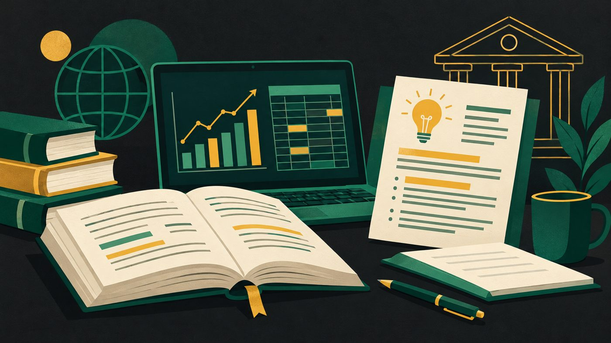
FixPath
An interactive troubleshooting guide for IT support. Answer a few questions about the symptom and it walks you to the right fix, step by step, with commands ready to copy.
- 18 categories, from everyday problems to help desk pro work like Active Directory and Microsoft 365
- 666 decision points leading to 542 step-by-step solutions
- Symptom search with a Ctrl+K shortcut
- Copy-ready ticket templates, escalations and call scripts
- Arabic and English, dark and light themes
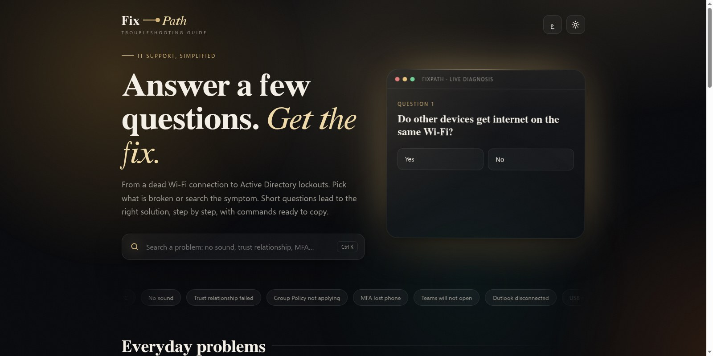
Mahfazty
A personal finance app in English and Arabic. Keep a shopping list with prices, tick off monthly bills, and log every expense.
- To Buy list with priorities (ASAP, Needed, Style) and a running total
- Monthly Bills that reset automatically each month
- Spending log with category breakdown and last 14 days chart
- Editable sections, priorities and categories, with backup export
- Arabic and English, dark and light themes
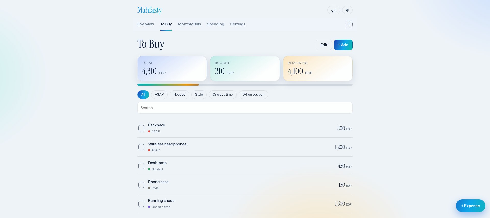
IT Support Academy
A training app for help desk work, built as missions and labs. Learn by fixing broken PCs, Windows problems and network faults instead of only reading.
- Story campaign, Fix the PC, Windows Rescue, Network Detective and Help Desk tickets
- Labs: Network Commands, Terminal Lab and Hardware Lab
- Simulators: Windows Desktop, Office, PC Builder and Network Puzzle
- Courses, flashcards, quizzes and an Interview Arena
- XP levels, streaks, skill radar, and JSON progress export
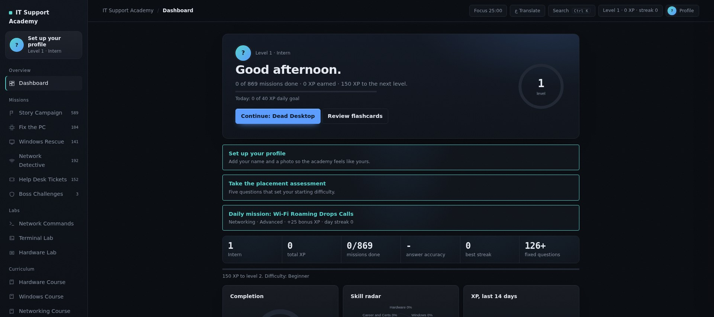
KeyForge
A password generator and locker that runs fully in the browser. Strong passwords, passphrases and PINs with an honest strength meter, and nothing ever uploaded.
- Four modes: password, passphrase, pronounceable and PIN
- Entropy score with a time-to-crack estimate and a plain-English reason
- Rules for look-alikes, repeats, sequences and custom character sets
- Bulk generate with copy all, plus a local locker with AES-256-GCM encryption and JSON export
- Private by design: Web Crypto API, no server and no account; Arabic and English
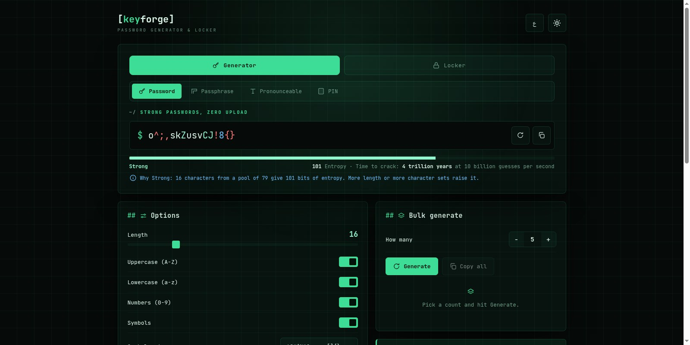
Plate
A workout and nutrition tracker in Arabic with an English switch. One place for the day's training, meals and weekly plan.
- Dashboard with calories, protein and workout volume
- Workout of the day with Push, Pull, Legs and other splits
- Weekly planner and your own exercise library
- Meal logging against calorie and macro targets
- Profile and JSON backup, saved on your device
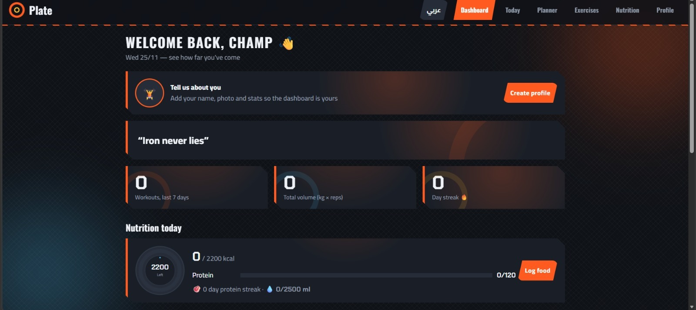
Boxing From Zero
An Arabic learning guide for beginner boxing at home, from wrapping your hands to full combos on the heavy bag.
- Guided path: hand wraps, stance, warm-up, punches, defense, combos
- 80 exercises, 22 combos and 176 explainer videos
- 12-week plan, round timer, training log and checklist
- Recovery section and a glossary
- Arabic and English, dark and light
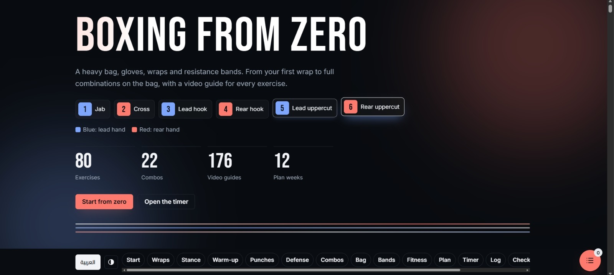
Clinicly
An appointment booking system for a clinic, in Arabic and English. Patients book in five steps and staff manage everything from a dashboard.
- Pick a specialty, doctor, visit type, day and time slot
- Prices and visit durations per service
- Admin dashboard with bookings, 7-day chart and search
- Manage services, team, colors, clients and data
- Export bookings to CSV
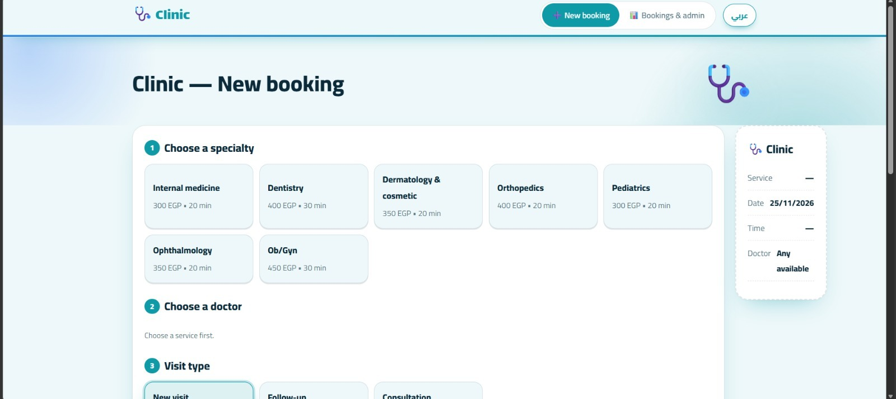
CafeBook
A table booking app for a cafe, in Arabic and English. Guests choose a session, a party size and a time, and staff manage every booking from an admin page.
- Session types: regular, work and study, birthday, business meeting
- Party size and seating area: indoor, terrace or quiet corner
- Day and time slot picker with a calendar for later dates
- Password-protected admin with a 7-day chart and search
- Export bookings to CSV and send a confirmation to the guest
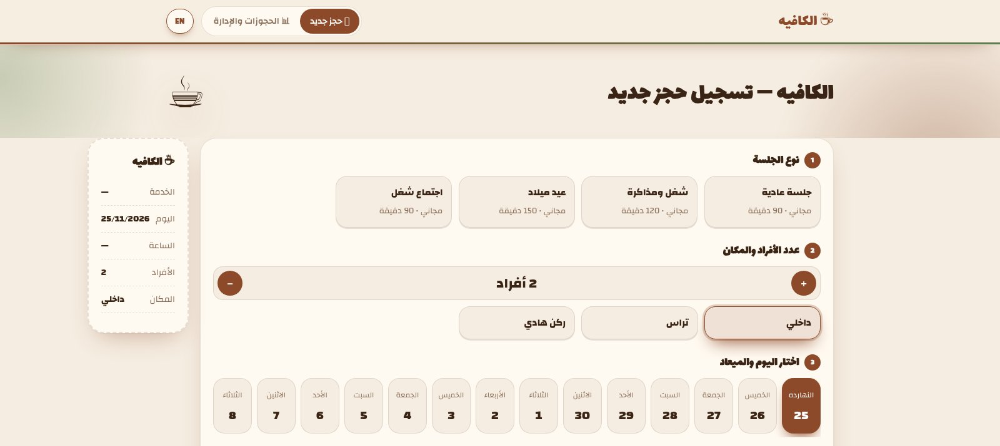
DeskFlow
A full help desk ticket tracker. Dashboard, ticket list, Kanban board, reports, a knowledge base and canned replies in one place.
- Dashboard with live queue stats, SLA breaches and charts by status, priority and category
- Ticket list with search, filters, tags, assignees and SLA countdowns
- Drag-and-drop board to move tickets between statuses
- Reports on resolution time and team workload, with export and print
- 152 knowledge articles and 134 canned replies; Arabic and English, dark mode
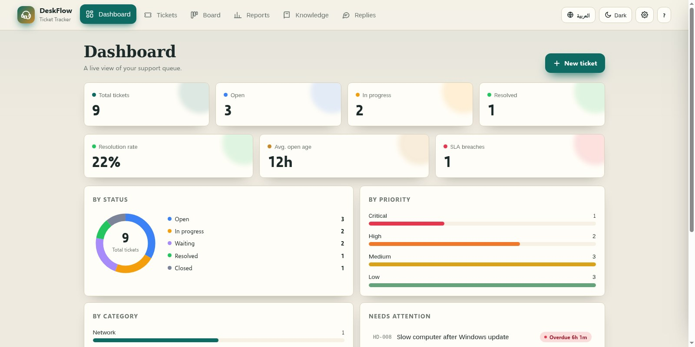
AskIT
An IT support portal for employees. Report a problem in a minute and get a ticket number, a clear response time and quick fixes to try while you wait.
- Three-step ticket form with categories, urgency levels and drag-and-drop attachments
- Quick fixes and help articles that update as you type
- My tickets with filters, search and a status timeline for every ticket
- Help center with how-to articles, and notifications as tickets move
- Arabic and English with full RTL, dark and light themes
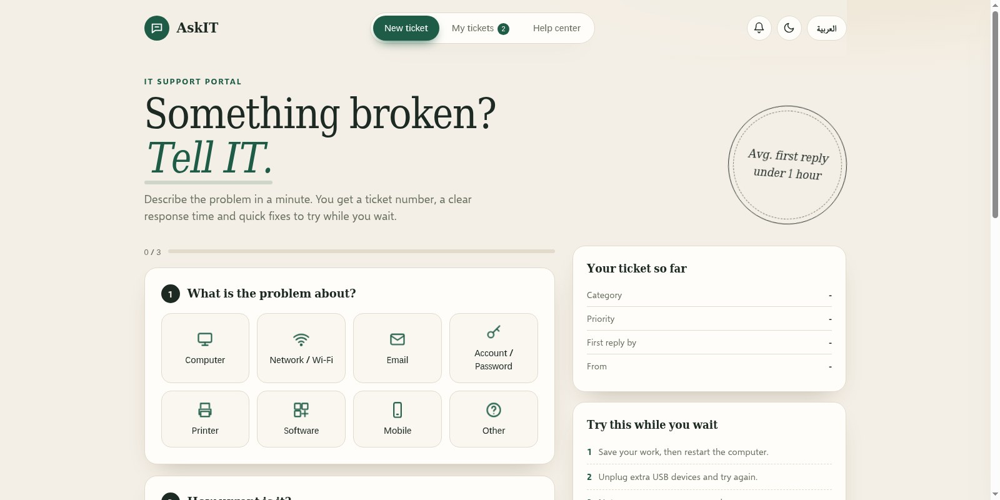
HomeBase
A personal start page that gathers the day in one place. The layout is made of widgets you can add, move and hide.
- Today priorities, daily checklist and quick capture inbox
- Focus timer with stopwatch and countdown
- Quick access links to your own tools
- Progress tracking and a weekly review
- Mind & Calm breathing exercises and brain-training games
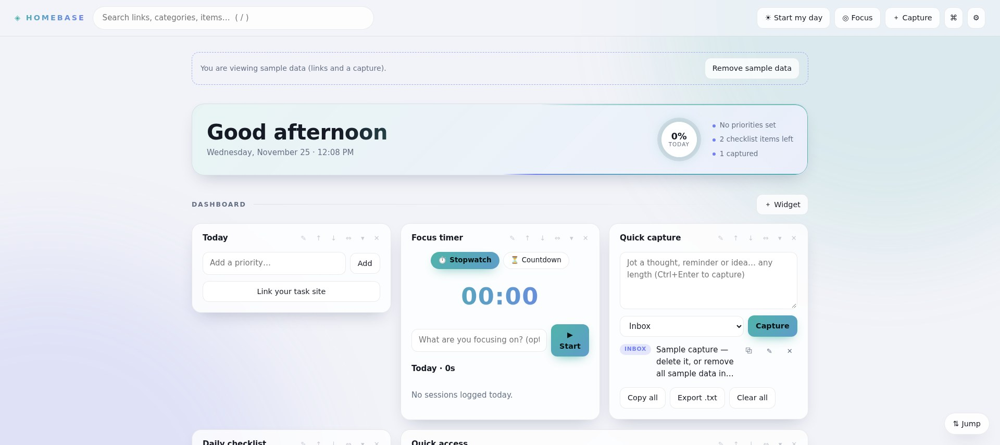
Deal Desk
A lightweight CRM for real estate leads, built around cold calling work. Track every lead, see the pipeline, and never miss a follow-up.
- Overview with monthly target, pipeline chart and leads per day
- Leads list with status, property type and condition
- Follow-ups sorted by soonest, with overdue days
- Offer calculator that applies value multipliers to a house value
- Editable dropdowns, targets and sample data
- Saved in this browser only. Backup and Restore as JSON to move it to another browser or device, plus a CSV export of leads
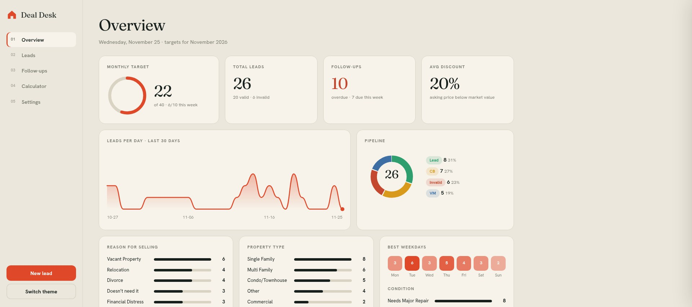
Notes Hub
One place for links, notes and to-dos, in Arabic with an English switch. Everything is saved in the browser.
- Three tabs: links, notes and to-dos
- Link cards with a preview image and description
- Categories, pinning and search
- Due dates and reminders on tasks
- Light and dark mode
- Saved in this browser only. Export and Import as JSON to move it to another browser or device
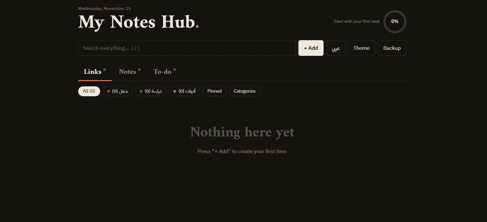
Bookmarks Vault
A bookmark manager with a dark, modern dashboard. Save sites into collections and folders and find them fast.
- Add bookmarks with an icon, folder and collection
- Import your browser bookmarks HTML file, or export
- Favorites, recently added and sort A to Z
- Search with Ctrl K
- Light and dark mode
- Saved in this browser only. Export or import a bookmarks HTML file to move your links (not a full backup of the app)
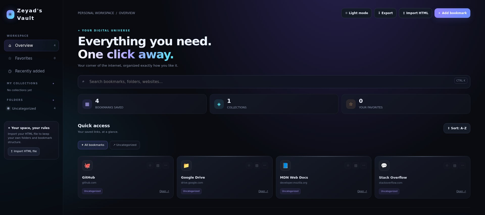
Noor
A mobile-first Arabic app for the daily Islamic routine. It shows prayer times for your city and tracks what you do each day.
- Prayer times for Egyptian cities and Makkah, with a countdown to the next prayer
- Prayer tracking, sunnah prayers and fasting
- Quran daily wird, adhkar, and a tasbih counter
- Hadith section and notes
- Activity history with streaks, themes and dark mode
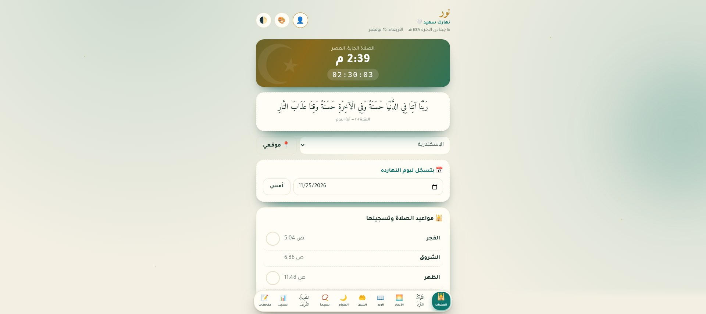
NutriTrack
A calorie and macro tracker. Pick foods from a searchable database, log what you eat, and see your day as a macro split. A built-in calculator estimates daily needs.
- Food database with category filters and search
- Daily log with calories, protein, carbs and fat
- BMR, TDEE and BMI from age, weight, height and activity
- Calorie targets for cut, maintain or bulk, plus protein advice
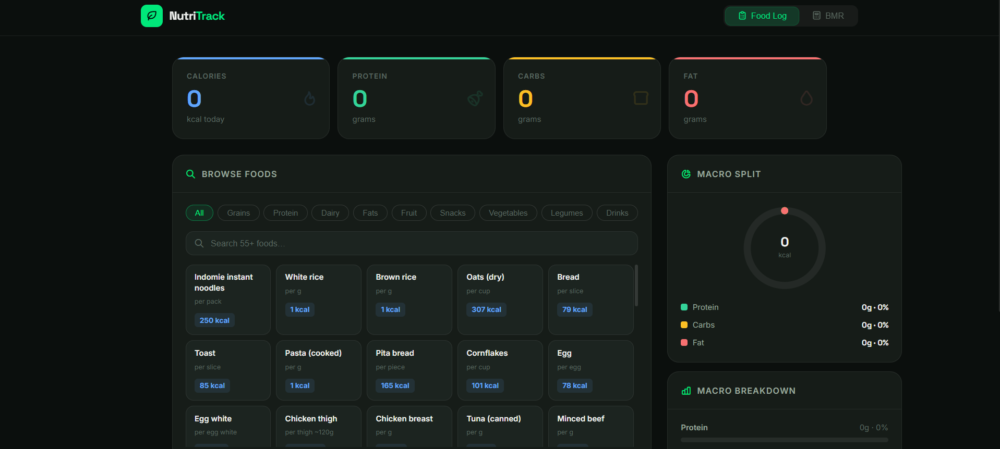
Flappy Bird
Flappy Bird Deluxe: a canvas game with unlockable bird skins, power-ups and three difficulty levels.
- Earn coins to unlock new bird skins
- Shield, slow-mo and double-points power-ups
- Easy, Normal and Hard modes with best score and achievements
- Arabic and English, sound toggle, fullscreen and keyboard controls
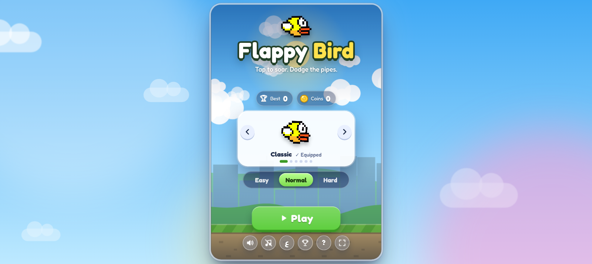
Advanced Calculator
A scientific calculator with extra tools in tabs, in three color themes.
- Calc, Convert, Money, Dates, Hex and Graph tabs
- Scientific functions, DEG/RAD and memory keys
- History panel and keyboard support
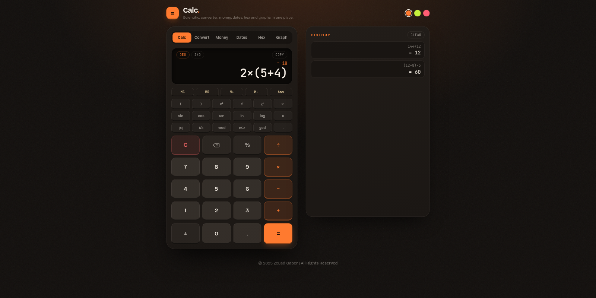
Weather App
Weather for your location or any city you search, using Open-Meteo data with no API key.
- Current conditions, feels-like, wind, humidity, pressure and UV
- 24-hour strip and 7-day forecast
- City search, locate button and recent cities
- Celsius/Fahrenheit toggle and Arabic support
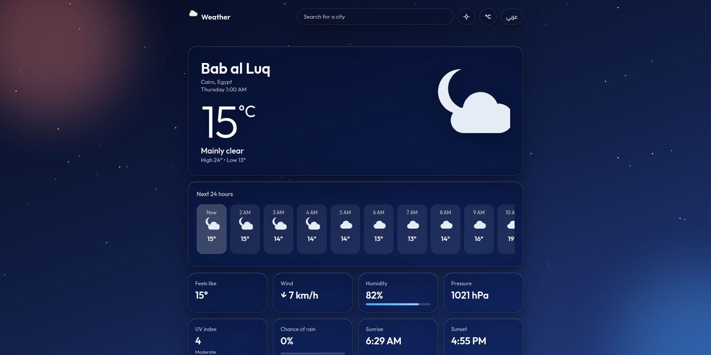
Tic Tac Toe
Game Night: Tic Tac Toe for two players or against the computer.
- Easy, Medium and Impossible computer levels
- Scoreboard, undo and new round
- Arabic and English, sound and theme toggles
- Keys 1 to 9 and remembered settings
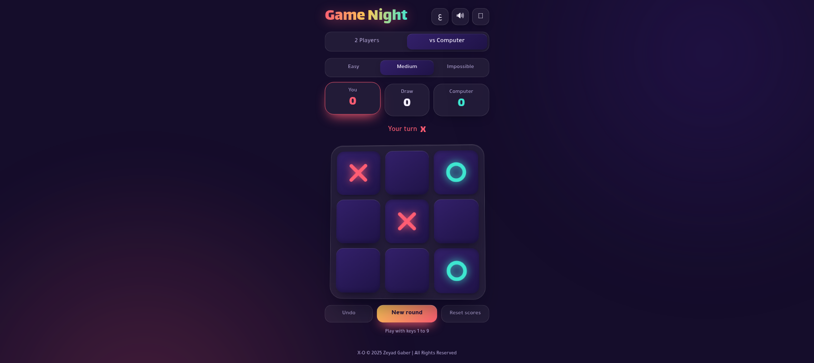
WebPedia
A hand-picked directory of 363 useful websites in 14 categories, from learning and AI tools to coding, cooking and sport. Find the right site fast with search or a category.
- 363 sites with logos and short descriptions, in 14 categories
- Instant search, with the / key as a shortcut
- Category picker to filter the list
- Light and dark theme that remembers your choice
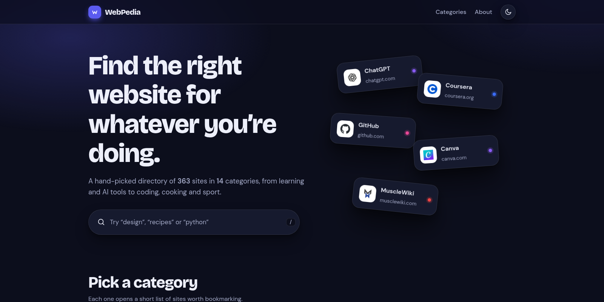
Exchange Rate Converter
Converts between world currencies using daily indicative rates from ExchangeRate-API.
- Searchable currency picker with a Most used list, in English and Arabic
- Inverse rate, copy result and popular-conversion chips
- Remembers your last pair, with a rates ticker and update time

Certificates 15
Thank you
ZEYAD GABER
IT TECHNICIAN · FRONT-END DEVELOPER · REAL ESTATE COLD CALLING